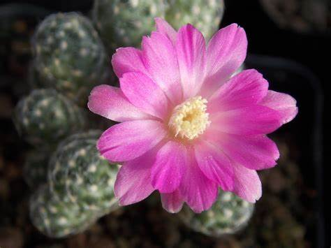

Plantas endemicas
Plantas
Cochemiea saboae

(Biznaga de Sabo o Jicari)
Esta pequeña suculenta pertenece a la familia Cactaceae y es originaria del noreste de México, específicamente en zonas áridas de Sonora y Chihuahua. Su tamaño compacto y su forma globosa la hacen destacar entre otras cactáceas.
Ir al menu